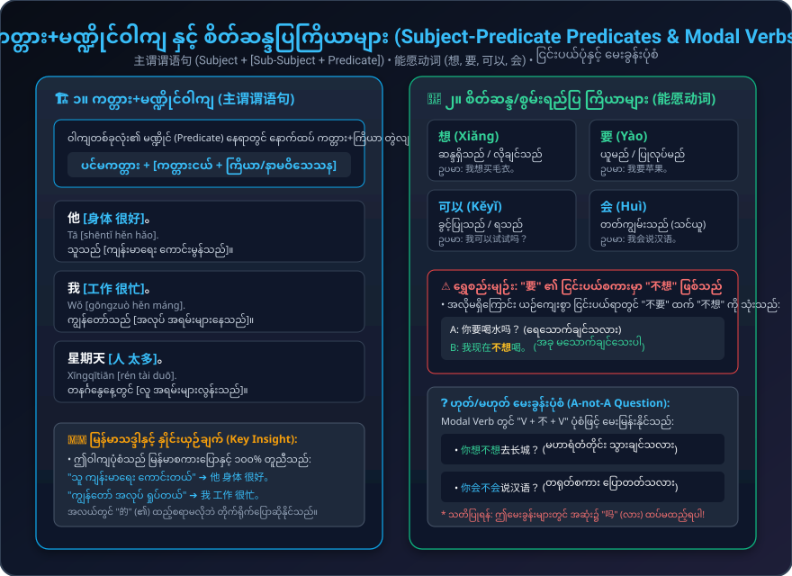
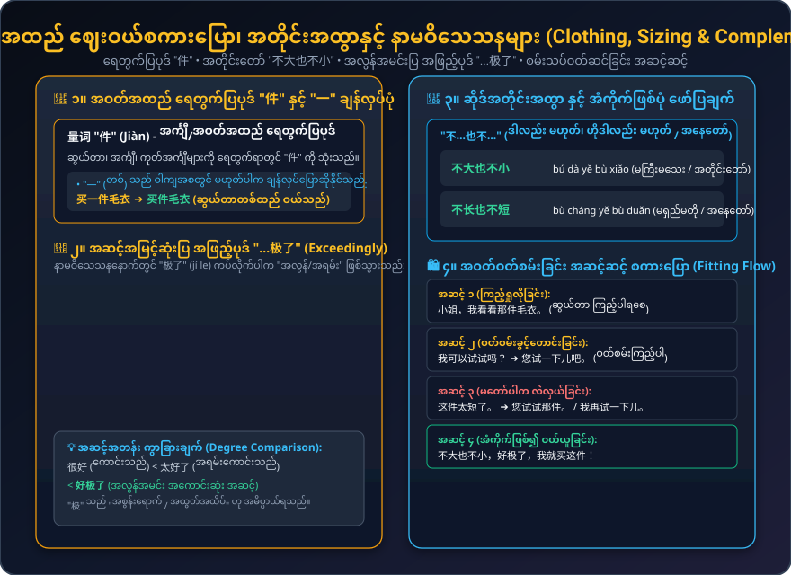

အဝတ်အထည် ဈေးဝယ်စကားပြော (Shopping for Clothes)၊ ကတ္တား+မဏ္ဍိုင်ဝါကျ (主谓谓语句: 星期天人太多)၊ စိတ်ဆန္ဒပြကြိယာများ (能愿动词: 想, 要, 可以, 会)၊ အတိုင်းတော်ပြစကား (不大也不小) နှင့် အဆင့်အမြင့်ဆုံးပြ အဖြည့်ပုဒ် (...极了)
ရာသီဥတုပြောဆိုခြင်း၊ ဆန္ဒဖော်ပြခြင်း၊ တိုင်ပင်ခြင်း၊ အဝတ်ဝတ်စမ်းခြင်းနှင့် အတိုင်းတော်ဖြစ်ကြောင်း ဖော်ပြချက်များ
ဈေးဝယ်ထွက်ရန် တိုင်ပင်ခြင်း နှင့် အဝတ်ဆိုင်တွင် ဆွယ်တာဝတ်စမ်းခြင်း လက်တွေ့စကားဝိုင်းများ
ကတ္တား+မဏ္ဍိုင်ဝါကျ၊ Modal Verbs နှင့် အဝတ်အထည် ဆိုဒ်အတိုင်းအထွာပြ ဇယားများ

主谓谓语句 (他身体很好) • 能愿动词 (想, 要, 可以, 会) • ငြင်းပယ်စကား "不想" • A-not-A မေးခွန်းပုံစံ

量词 "件" • 买件毛衣 • အတိုင်းတော် "不大也不小" • အလွန်အမင်းပြ အဖြည့်ပုဒ် "...极了" (好极了)
主谓谓语句၊ Modal Verbs၊ "不...也不..." နှင့် "...极了" သဒ္ဒါအသုံးများ
မဏ္ဍိုင် (Predicate) နေရာတွင် ကတ္တားငယ်+ကြိယာ/နာမဝိသေသန တွဲလျက်ပါရှိသော ဝါကျဖြစ်သည်။ မြန်မာစကားပြောနှင့် ဝါကျတည်ဆောက်ပုံ တိုက်ရိုက်တူညီသည်။
想 (ဆန္ဒရှိသည်)၊ 要 (လိုချင်သည်)၊ 可以 (ရသည်)၊ 会 (တတ်ကျွမ်းသည်) တို့သည် ကြိယာရှေ့တွင် ထားရသည်။
ဆန့်ကျင်ဘက် အစွန်းနှစ်ဖက် မဟုတ်ဘဲ အလယ်အလတ် အနေတော်ဖြစ်ကြောင်း ဖော်ပြသည်။
နာမဝိသေသနနောက်တွင် ကပ်၍ အလွန်အမင်း အထွတ်အထိပ် ရောက်ရှိကြောင်း ပြသည်။
အမျိုးအစားအလိုက် စစ်ထုတ်ခြင်း၊ ရှာဖွေခြင်းနှင့် အသံထွက် နားထောင်ခြင်း
ပင်ပန်းလွန်းခြင်း၊ ရုပ်ရှင်ကြည့်ရန် ငြင်းပယ်ခြင်း နှင့် ပေကျင်းမြို့ မိတ်ဆက်ပေးခြင်း
ဒုတိယအသံ + စတုတ္ထအသံ (2nd + 4th Tone)၊ အသုံးများသော အသံတွဲများနှင့် နားထောင်ပြီး ပြန်ပြောဆိုခြင်း
သင်ခန်းစာ (၁၂) မှ အဓိက အချက်များကို ဖြေဆိုပြီး ရှင်းလင်းချက်များကို ချက်ချင်း လေ့လာပါ